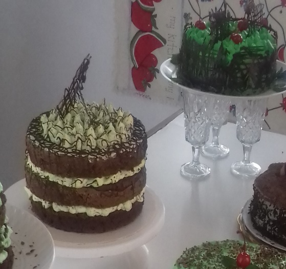
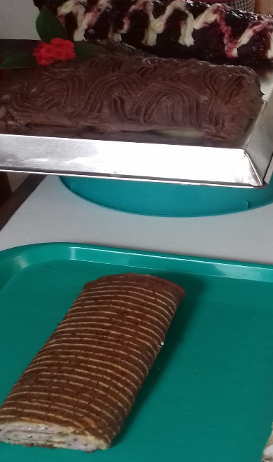

1 cta de esencia de vainilla, nescafe, choc. o nuez
250 gr de chocolate tipo cobertura
250 ml de crema p/batir
PROCEDIMIENTO:
.Precalentar el horno a180°
.Engrasar, enharinar y empapelar los 3 moldes de 20 cm.
.Cernir los polvos
.Calentar la leche y agregar el chocolate y reservar.
.Acremar la mantequilla y agregar el azúcar.
.Batir el huevo a punto de listón con un poco de azúcar y agregar este batido al batido de mantequilla.
.incorporar los polvos alternando con la leche y chocolate.
.vaciar en los moldes y hornear por 45 min. Aprox.
NOTA: SE HACE EL MISMO PROCESO PARA LOS DOS CHOCOLATES.
ENSAMBLE Y DECORACION:
Para ensamblar primero se recortan los panes en círculos de unos 3 cm. de ancho, dependiendo el molde es el número de aros que se cortan.
Se van poniendo intercalados, uno de chocolate oscuro y uno de chocolate blanco, una vez ensamblados los aros se van haciendo las capas pegándolas con ganache de chocolate blanco u oscuro según su gusto; la capa debe ser muy delgada solo para pegar las capas de pan.
Una vez ensamblado las capas (3 de preferencia) se cubre la miga con una capa delgada de ganache y se decora al gusto con las duyas que guste.
Se bienvenido y preparate para aprender a cocinar los mejores pasteles de todo tipo de sabores y mejora tus habilidades culinarias
con recetas de pasteles.
pastel imperial de naranja y nuez
INGREDIENTES:
250gr de harina.
250gr de azúcar standart.
250gr de mantequilla.
4 pzs de huevo.
2 yemas.
½ tz de leche.
1 ralladura de naranja.
50gr de nuez.
1 cta de esencia de naranja.
½ cta de royal (polvo p/hornear).
Molde de 20 cm.
procedimiento:
Precalentar el horno a 180°
Engrasar, enharinar y empapelar el molde
Acremar la mantequilla junto con el azúcar
Cernir la harina y el royal
Agregar los huevos y las yemas uno a uno al acremado de mantequilla.
Incorporar con pala la harina y royal, la ralladura de naranja, la nuez (enharinada) y al final la leche y la esencia.
Vaciar al molde y hornear por 25 minutos aprox. A 180°
para decorar, se deja enfriar completamente y se decora con una blonda o esténcil y azúcar glass o cocoa.
Pastel 3 leches
INGREDIENTES:
PAN
2 tzs de harina.
6 claras de huevo
6 yemas
1 tz de azúcar
½ tz de leche
2 ctas de polvo p/hornear.
1 cta de esencia de vainilla.
ENVINADO:
1tz de leche entera.
1 lata de leche evaporada
1 lata de leche condensada
PLUS
1 lata de media crema
1 caballito de brandy, jerez o rompope.
2 cdtas de vainilla.
2 ctas de leche en polvo o cofee mate.
CUBIERTA:
1 lt crema para batir
Durazno, kiwi, fresa, piña.
Brillo o glase natural (para las frutas).
PROCEDIMIENTO:
.Precalentar el horno a 180° por 10 minutos
.Engrasar, enharinar y empapelar el molde de 24 cm
.Cernir tres veces la harina y el polvo para hornear.
.Batir las claras en forma de nieve e ir agregando el azúcar en forma de lluvia.
.Agregar yemas poco a poco.
.Por último, agregamos los polvos poco a poco en forma envolvente, alternando con la leche y agregar una tapita de esencia de vainilla.
.Vaciar en el molde y hornear a 180° por 35 minutos aprox.
NOTA: checar con un palillo en vertical, al centro y diagonal para ver el cocimiento.
Para el envinado, se mezclan las 3 leches y se refrigeran para que espesen y una vez frio el pastel se baña con la leche; si es posible en el mismo molde cubierto con papel fil o plástico, por mínimo una hora o toda la noche en refrigeración
Ya envinado se rellena poniendo primero una capa de crema batida, después la fruta elegida, luego el otro pan también con una capa de crema en la parte que va hacia abajo, acomodándolo para que quede alineado.
Una vez ya relleno el pan, se cubre con crema batida y se alisa perfectamente para hacer el decorado de su preferencia.
Al final se pone la fruta encima cubierta con brillo o glasé.
Pastel de zanahoria
INGREDIENTES:
2 tzs de harina
¾ tz de aceite
1 cta de polvo de hornear
½ cta de bicarbonato
2 ctas de canela
200 gr de azúcar mascabado
1 pzca de sal
2 tzs de zanahoria rallada.
4 huevos
50 gr de arándanos
50 gr de nuez
1 tz de piña en almíbar
1 pzca de cardamomo
1/8 cta de nuez moscada
50 gr de pasas güeras
50 gr de coco rallado
PROCEDIMIENTO:
.Precalentar el horno a 180°
.Engrasar, enharinar y empapelar el molde de 24 cm.
.Cernir todos los polvos.
.Se bate con globo el aceite con el azúcar y los huevos
.Se agregan los polvos envolventemente
.Agrega los frutos secos y la zanahoria
.al final se pone el cardamomo y la nuez moscada y canela.
.se vacía en el molde y se hornea por 30 min. Aprox.
DECORADO:
Se bate un queso filadelphia de 190 gr y 90 gr de mantequilla con una cucharada de vainilla y azúcar glass al gusto.
Se cubre el pastel con este batido.
También se puede bañar con ½ lata de leche condensada, un queso filadelphia de 190 gr y 10 gr de grenetina.
(esta mezcla se calienta y se vacía tibio sobre el pastel muy frio y con una capa de crema batida.
Pastel de Mil Hojas
INGREDIENTES:
½ K pasta hojaldre
1 lt. crema pastelera
100 gr azúcar glass
2 Charolas
1 cortador de pizza
PROCEDIMIENTO:
.Precalentar el horno a 200°
.Engrasar y empapelar la charola
.Extender la pasta hojaldre hasta obtener 1-2 cm de grosor
.Cortar 3 rectángulos
de 15 x 30 cm aprox.
.hornear la primera capa de hojaldre con una charola encima para evitar que leve o pinchar con tenedor.
.las otras 2 capas se hornean sin la charola y sin pinchar
.ya fría la pasta se rellena con la crema pastelera y fruta de su preferencia, poniendo la capa sin levar hasta abajo.
.al final se decora solo con azúcar glass y unos pompones de crema pastelera y fruta elegida.
Pastel Esponja de Chocolate
INGREDIENTES:
6 claras de huevo.
6 yemas.
300 gr de azúcar
2 tzs de harina
½ tz de cocoa
2 ctas de polvo de hornear ( 10 gr ).
Leche necesaria.
PROCEDIMIENTO:
.Engrasar, enharinar y empapelar molde de 22 a 24 cm.
.Precalentar el horno a 180°.
.Cernir harina, cocoa y polvo de hornear 3 veces.
.Batir las claras a punto de nieve y agregar el azúcar en forma de lluvia.
.Agregar poco a poco las yemas al batido de las claras.
.Incorporar los polvos en forma envolvente al batido anterior.
.Agregar leche necesaria hasta obtener punto de hilo.
.vaciar en molde y hornear por 30 min. Aprox.
DECORADO:
Se puede envinar con 3 leches o con jarabe de café y chocolate, también se cubre con ganache de chocolate frio y batido; para cubrir con ganache liquido primero se cubre con una capa de crema para batir y se refrigera, ya frio se baña con el ganache temperado.
Pastel Menta Chips

INGREDIENTES:
170 gr de harina
250 gr de azúcar
100 ml de aceite o mantequilla
50 gr de cocoa
1 cta de polvo p/ hornear
2 huevos
120 ml de leche
1 lt de crema para batir
10 ml de esencia de menta
Color vegetal
100 gr de chocolate para rallar
PROCEDIMIENTO:
.Precalentar el horno a 180°
.Engrasar, enharinar y empapelar el molde de 20cm.
.Cernir harina, cocoa y polvo de hornear
.Batir azúcar, aceite y huevos con batidor globo
.Agregar los polvos cernidos alternando con la leche y al final agregar agua caliente si es necesario.
.Vaciar y hornear por 30 min. Aprox.
DECORADO:
Se bate crema para batir y se agrega la esencia y el color menta, cuando ya esta montada la crema se agrega chocolate rallado de forma envolvente y se divide el pan en 3 partes y se rellena con esta crema utilizando una duya lisa grande hasta completar las 3 capas
Al final de be quedar la capa de pompones de crema y se espolvorea con chocolate rayado o se pone chocolate derretido en las orillas para que caiga por los lados.
Brazo Gitano

INGREDIENTES:
100gr de harina
4 huevos
125 gr de azúcar
60 gr mantequilla
10 gr de royal
1 pzca de sal
PROCEDIMIENTO:
.Precalentar el horno a 180°
.Engrasar, enharinar y empapelar la charola
.Cernir polvos
.batir claras a punto de turrón con la mitad de la azúcar y reservar
.Batir las yemas con azúcar hasta que cambie de color
.agregar la mantequilla suavizada y batir hasta que se integre completamente
.se agregan los polvos hasta integrar y se incorporan las claras en forma envolvente
.se vacía a la charola y se hornea de 12 a 15 min.
.se deja enfriar 5 minutos y se enrolla en un trapo húmedo
.se rellena de crema batida del sabor que guste o queso o ganache y se cubre con la misma crema de relleno.
Pastel de Rompope Con Almendra
INGREDIENTES:
500 gr de harina
400 gr de azúcar
10 huevos
¾ tz de rompope
1 cta de vainilla
400 gr de mantequilla
º20 gr de royal
1 receta de crema pastelera
10 ml de esencia de almendra
100 gr de almendras fileteadas
200 gr de azúcar isomal
PROCEDIMIENTO:
.Precalentar el horno a 180°
.Engrasar, enharinar y empapelar el molde
.cernir los polvos
.Acremar la mantequilla con el azúcar y agregamos el huevo uno a uno
.Después se agrega la vainilla
.Incorporamos los polvos e intercalamos con el rompope, hasta obtener una mezcla en forma de hilo.
.vaciamos y horneamos por 40 min. Aprox.
DECORADO:
La crema pastelera se mezcla con la esencia de almendras y con esto se rellena el pastel y se cubre;
por encima se decora con almendras fileteadas y tostadas en forma de flor, empezando por el centro.